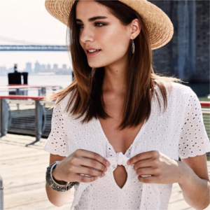
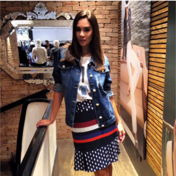
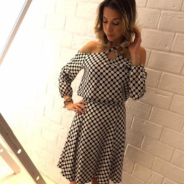
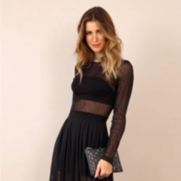

- Rádio Nacional
- >
- sobre
Sobre
A Rádio Nacional nasceu como uma franquia chamada Print Rip em 1994, mas ao longo de 3 anos houve necessidade de uma mudança perfil devido uma degradação da marca, então em meados de 1998, a loja virou multimarcas com o nome provisório de Print News. Em uma reunião com o proprietário de uma das marcas revendidas na loja "Guaraná Brasil", foram sugeridos alguns nomes; quando definiu-se "Rádio Nacional", nasceu então um novo conceito em moda feminina.
 Hoje são duas lojas nos principais shopping center de Santos, com uma grande variedade de roupas a acessórios agradando um seleto publico.
Nós somos bem modestos, mas também estamos muito orgulhosos de ter criado um conceito de loja de alto nível com as melhores roupas da baixada santisnta. Basta perguntar a nossos clientes. E estamos sempre trabalhando para fazer a Radio Nacional ainda melhor. Visite uma de nossas lojas e veja por si mesma.
Somos uma família grande feliz, focado no que amamos fazer: deixar você mais bela todo dia. Trabalhamos duro todos os dias para:
- Atender com excelência às demandas de nossos clientes a partir do desenvolvimento e oferta de produtos que contribuam para uma grande satisfação.
- Criar novo visual e se reinventar
Ser uma loja de referência, reconhecida como a melhor opção por nossos clientes, colaboradores, comunidade e fornecedores.
 